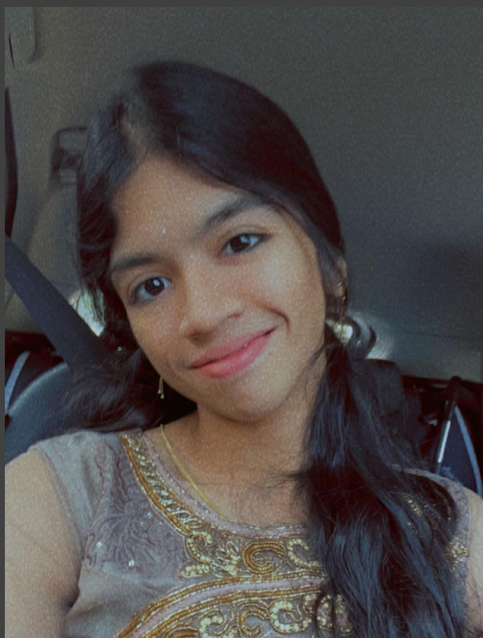

Minisha Tangudu

Summary
I am a passinate computer science student with a keen interest in solving real-life challenges through code.proficient in C and Python,currently exploring algorithms,DSA and software design,
eager to contribute to innovation tech solutions.
Education
- Bachelor of Computer Science Technology-Gitam University,vishakapatnam
Projects
Skill spark-personalized learning paths
Role:Project Lead
- Designed an app that provides customized learning paths for students, offering resources,
roadmaps, and group chats for enhanced collaboration.
- Coordinated with team members to brainstorm features and ensure efficient implementation.
Skills
Python: ⭐️⭐️⭐️⭐️⭐️
C: ⭐️⭐️⭐️
web development: ⭐️⭐️⭐️⭐️
Key achievements
- Won 1st prize in kerala scholarship
examination
- Actively participated in coding
competitions and tech clubs
Other